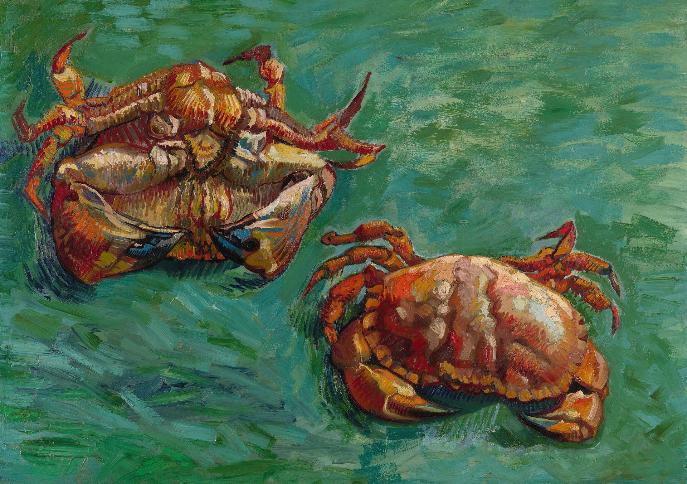

两只螃蟹 Two Crabs
梵高 · 1889年 · 私人收藏，借展于伦敦国家美术馆
Vincent van Gogh · 1889 · Private collection, on loan to the National Gallery, London
图片：Wikimedia Commons，公有领域 / Image: Wikimedia Commons, public domain

发现 · Discover
两只螃蟹 Two crabs
一只螃蟹仰面躺着，另一只正面朝上。
One crab lies on its back; the other is the right way up.
橙色和绿色 Orange and green
梵高把螃蟹橙红色的身体，放在强烈的绿色背景上。这两种颜色是互补色，放在一起彼此都更鲜艳。
Van Gogh set the crabs' orange-red bodies against a powerful green background. The two are complementary colours, each making the other more vivid.
像海水的背景 A background like the sea
平行的笔触，在一片像海水一样充满活力的背景上，塑造出螃蟹的形体。
Parallel strokes sculpt the creatures' forms against an exuberant, sea-like surface.
北斋的螃蟹 Hokusai's crabs
他大概受到了日本画家北斋一幅木刻版画的启发。梵高称赞北斋画的螃蟹“令人赞叹”。
He was probably inspired by a woodcut of crabs by the Japanese artist Hokusai, whose crabs Van Gogh called “admirable”.
重新开始 Back to work
1889年1月7日，梵高写信给提奥：“明天我就要重新开始工作了。”这幅画被认为是他回去工作后最早画的作品之一。
On 7 January 1889, Van Gogh wrote to Theo: “I am going to set to work again tomorrow.” This is thought to be one of the first works he made when he returned to painting.
椅子旁边 Beside the chair
在国家美术馆，这幅画挂在《梵高的椅子》旁边。
At the National Gallery, it hangs beside Van Gogh's Chair.
故事 · The story
1889年1月 January 1889
1889年1月，梵高出院回到阿尔勒的黄房子。他写信告诉提奥，他要重新开始工作了，先画一两幅静物。
In January 1889, Van Gogh left hospital and returned to the Yellow House in Arles. He wrote to Theo that he would start work again, beginning with one or two still lifes.
1889年 · 私人收藏，借展于伦敦国家美术馆 / 1889 · Private collection, on loan to the National Gallery, London
北斋的螃蟹 Hokusai's crabs
几个月前，提奥寄给他一期介绍日本艺术的杂志，里面有北斋画的螃蟹。梵高很喜欢，称赞它们“令人赞叹”。
A few months earlier, Theo had sent him an issue of a magazine on Japanese art, which included Hokusai's crabs. Van Gogh admired them greatly.
1889年 · 私人收藏，借展于伦敦国家美术馆 / 1889 · Private collection, on loan to the National Gallery, London
在伦敦 In London
这幅画属于一位私人藏家，长期借给伦敦国家美术馆展出，就挂在《梵高的椅子》旁边。
The painting belongs to a private collector and is on long-term loan to the National Gallery in London, where it hangs beside Van Gogh's Chair.
1889年 · 私人收藏，借展于伦敦国家美术馆 / 1889 · Private collection, on loan to the National Gallery, London
明天我就要重新开始工作了。 I am going to set to work again tomorrow.
作品档案 · Artwork record
| 画家（生卒年） · Artist (dates) | 文森特·梵高（1853–1890） / Vincent van Gogh (1853–1890) |
|---|---|
| 画名 · Title | 两只螃蟹 / Two Crabs |
| 年份 · Date | 1889年（国家美术馆认为是1889年1月；也有研究认为更早） / 1889 (January 1889 according to the National Gallery; some research suggests earlier) |
| 材质 · Medium | 布面油画 / Oil on canvas |
| 尺寸 · Dimensions | 47 × 61 cm |
| 收藏地 · Collection | 私人收藏，借展于伦敦国家美术馆，43号展厅（编号 L995） / Private collection, on loan to the National Gallery, London, Room 43 (L995) |
关于画家 · About the artist
文森特·梵高（1853–1890），荷兰画家。他将近27岁才开始画画，短短十年留下了大量作品。1888年他来到法国南部的阿尔勒，在那里画出了许多最著名的画。
Vincent van Gogh (1853–1890) was a Dutch painter. He began painting at around 27 and left a huge body of work in just ten years. In 1888 he moved to Arles in the south of France, where he painted many of his best-known works.
更多梵高的画 · More by Vincent van Gogh